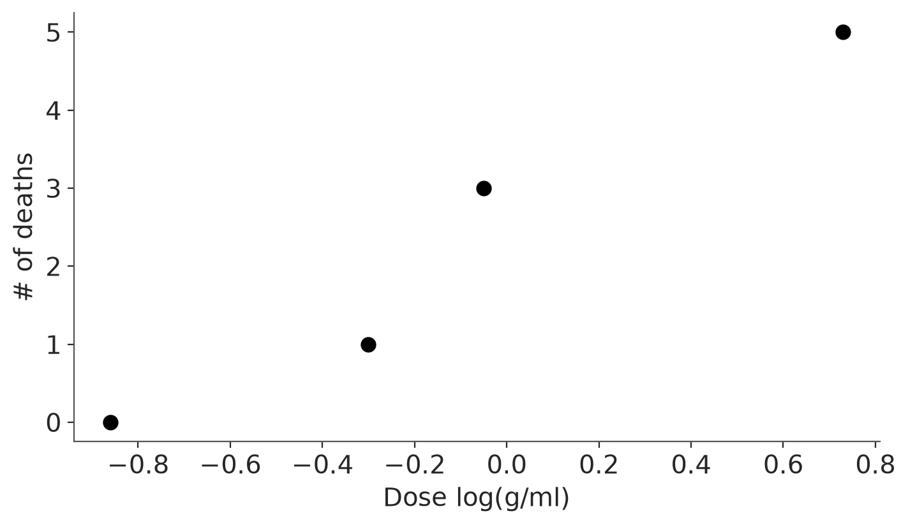
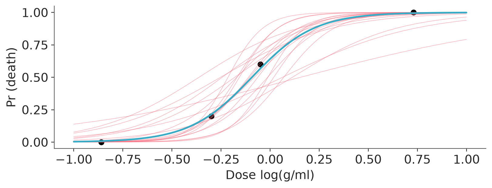
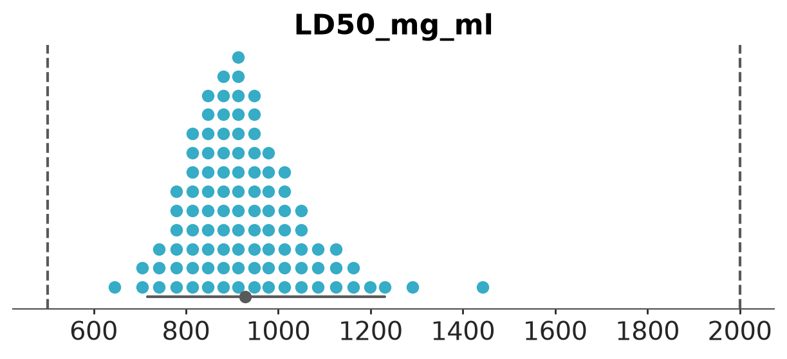
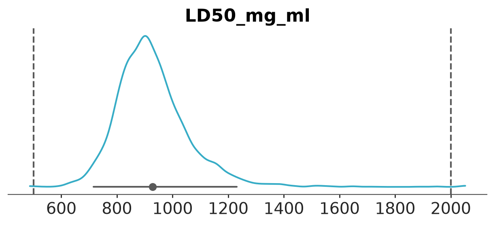
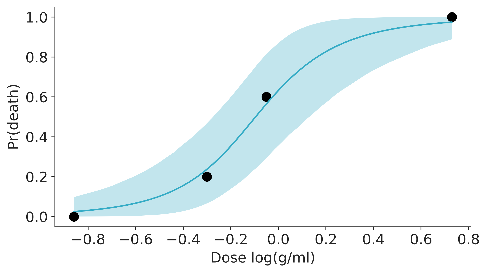
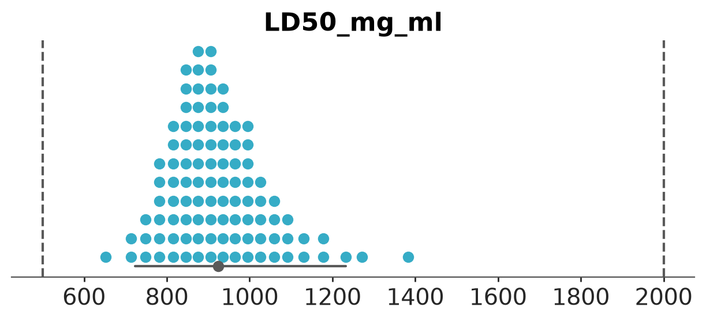
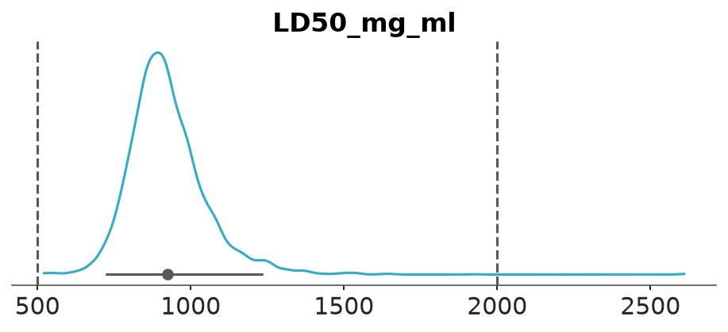

import warnings
import sys
sys.path.insert(0, '..')
import arviz as az
import bambi as bmb
import matplotlib.pyplot as plt
import numpy as np
import pandas as pd
import xarray as xr
from scipy.special import expit
warnings.filterwarnings("ignore", category=FutureWarning)
az.style.use("arviz-variat")
# We need to explicitly tell seaborn to use the style defined by
# matplotlib rcParams, otherwise it will override them.
import seaborn.objects as so
so.Plot.config.theme.update(plt.rcParams)
az.rcParams["stats.ci_prob"] = 0.95
plt.rcParams["figure.dpi"] = 75
SEED = 7412Bioassay case study
This notebook includes the code for Bayesian Workflow book Section 3.5 A simple example of probabilistic programming.
1 Introduction
We demonstrate the role of statistical programming environments and probabilistic programming by going through the steps of data analysis and computation in the context of a simple example.
We work through an example by Racine-Poon et al. (1986), also included in Section 2.8 of Bayesian Data Analysis (Gelman et al. 2013), of a logistic regression fit to a bioassay experiment.
from cmdstanpy import CmdStanModel, disable_logging
disable_logging()
from utils import print_stan/home/osvaldo/anaconda3/envs/bwb/lib/python3.14/site-packages/tqdm/auto.py:21: TqdmWarning: IProgress not found. Please update jupyter and ipywidgets. See https://ipywidgets.readthedocs.io/en/stable/user_install.html
from .autonotebook import tqdm as notebook_tqdmfrom jax import random
import jax.numpy as jnp
import numpyro
from numpyro import distributions as dist
from numpyro.infer import NUTS, MCMC, Predictiveimport pymc as pm2 Bioassay data
Read the data from csv
df_bioassay = pd.read_csv("data/bioassay.csv")
df_bioassay| dose | batch_size | deaths | |
|---|---|---|---|
| 0 | -0.86 | 5 | 0 |
| 1 | -0.30 | 5 | 1 |
| 2 | -0.05 | 5 | 3 |
| 3 | 0.73 | 5 | 5 |
Plot the data
_, ax = plt.subplots(figsize=(7, 4))
ax.scatter(df_bioassay["dose"], df_bioassay["deaths"], s=60, color="black")
ax.set(xlabel="Dose log(g/ml)", ylabel="# of deaths")
ax.spines[["top", "right"]].set_visible(False)
Data as list for CmdStanPy
bioassay_data = {
"J": len(df_bioassay),
"x": df_bioassay["dose"].to_list(),
"N": df_bioassay["batch_size"].to_list(),
"y": df_bioassay["deaths"].to_list(),
}J = len(df_bioassay)
x = df_bioassay["dose"].values
N = df_bioassay["batch_size"].values
y = df_bioassay["deaths"].valuesx = df_bioassay["dose"]
N = df_bioassay["batch_size"]
y = df_bioassay["deaths"]3 Stan models and inference
Model 0 (without priors).
mod0 = CmdStanModel(
stan_file=str("bioassay0.stan"),
stanc_options={"warn-pedantic": True},
)
print_stan(mod0)data {
int<lower=0> J;
vector[J] x;
array[J] int<lower=0> N;
array[J] int<lower=0, upper=N> y;
}
parameters {
real a;
real b;
}
model {
y ~ binomial_logit(N, a + b * x);
}def mod0(x, N, y=None):
a = numpyro.sample("a", dist.Normal(0, 1e6)) # flat prior
b = numpyro.sample("b", dist.Normal(0, 1e6)) # flat prior
with numpyro.plate("J", len(N)):
return numpyro.sample("y", dist.BinomialLogits(total_count=N, logits=a + b*x), obs=y)with pm.Model() as mod0:
a = pm.Flat("a")
b = pm.Flat("b")
pm.Binomial("y", n=N, logit_p=a + b * x, observed=y)Model 1 (with priors).
mod1 = CmdStanModel(
stan_file=str("bioassay1.stan"),
stanc_options={"warn-pedantic": True},
)
print_stan(mod1)
mod1data {
int<lower=0> J;
vector[J] x;
array[J] int<lower=0> N;
array[J] int<lower=0, upper=N> y;
}
parameters {
real a;
real<lower=0> b;
}
model {
{a, b} ~ normal(0, 5);
y ~ binomial_logit(N, a + b * x);
}CmdStanModel: name=bioassay1
stan_file=/home/osvaldo/proyectos/06_Tutoriales/bayesian-workflow/bioassay/bioassay1.stan
exe_file=/home/osvaldo/proyectos/06_Tutoriales/bayesian-workflow/bioassay/bioassay1
compiler_options=stanc_options={'warn-pedantic': True}, cpp_options={}def mod1(x, N, y=None):
a = numpyro.sample("a", dist.Normal(0, 5))
b = numpyro.sample("b", dist.Normal(0, 5))
with numpyro.plate("J", len(N)):
return numpyro.sample("y", dist.BinomialLogits(total_count=N, logits=a + b*x), obs=y)with pm.Model() as mod1:
a = pm.Normal("a", mu=0, sigma=5)
b = pm.Normal("b", mu=0, sigma=5)
pm.Binomial("y", n=N, logit_p=a + b * x, observed=y)Sample with default settings
fit1 = mod1.sample(data=bioassay_data, seed=SEED, show_progress=False)
dt_bioassay1 = az.from_cmdstanpy(fit1)#| label: fit1
#| results: hide
kernel = NUTS(mod1)
mcmc = MCMC(kernel, num_warmup=1000, num_samples=1000)
mcmc.run(random.PRNGKey(SEED), x=x, N=N, y=y)
dt_bioassay1 = az.from_numpyro(mcmc)#| results: hide
with mod1:
dt_bioassay1 = pm.sample(random_seed=SEED)4 Posterior summary
Posterior summary and MCMC diagnostics
az.summary(dt_bioassay1)| mean | sd | eti95_lb | eti95_ub | ess_bulk | ess_tail | r_hat | mcse_mean | mcse_sd | |
|---|---|---|---|---|---|---|---|---|---|
| a | 0.58 | 0.78 | -0.89 | 2.1 | 1564 | 1810 | 1.00 | 0.02 | 0.015 |
| b | 6.3 | 2.53 | 2.3 | 12 | 1750 | 1470 | 1.00 | 0.059 | 0.046 |
Plot 20 logistic curves given 20 posterior draws, and one logistic given the posterior mean
posterior = az.extract(dt_bioassay1, group="posterior")
posterior_20 = az.extract(dt_bioassay1, group="posterior", num_samples=20, random_seed=SEED)
_, ax = plt.subplots(figsize=(8, 3))
ax.scatter(
df_bioassay["dose"],
df_bioassay["deaths"] / df_bioassay["batch_size"],
color="black",
)
ax.set(xlabel="Dose log(g/ml)", ylabel="Pr (death)")
xs = np.linspace(-1, 1, 200)
ax.plot(
xs,
expit(posterior_20["a"].values + posterior_20["b"].values * xs[:, None]),
color="C1",
lw=0.5,
alpha=0.6,
)
ax.plot(
xs,
expit(posterior["a"].mean().item() + posterior["b"].mean().item() * xs),
color="C0",
lw=2,
)
5 Derived quantities
Compute posterior draws for LD50 in log(g/ml) and in mg/ml
ld50_log = -dt_bioassay1.posterior["a"] / dt_bioassay1.posterior["b"]
ld50_mg = 1000 * np.exp(ld50_log)
dt_bioassay1.posterior["LD50_log_g_ml"] = ld50_log
dt_bioassay1.posterior["LD50_mg_ml"] = ld50_mgSummarise LD50 posterior
az.summary(dt_bioassay1, var_names="LD50_log_g_ml")| mean | sd | eti95_lb | eti95_ub | ess_bulk | ess_tail | r_hat | mcse_mean | mcse_sd | |
|---|---|---|---|---|---|---|---|---|---|
| LD50_log_g_ml | -0.084 | 0.137 | -0.33 | 0.21 | 2174 | 2689 | 1.00 | 0.003 | 0.0031 |
Quantile dot plot of the LD50 (mg/ml) posterior
pc = az.plot_dist(
dt_bioassay1,
kind="dot",
var_names="LD50_mg_ml",
visuals={"point_estimate_text":False},
)
az.add_lines(pc, [500, 2000]);
Kernel density plot of the LD50 (mg/ml) posterior
pc = az.plot_dist(
dt_bioassay1,
var_names="LD50_mg_ml",
visuals={"point_estimate_text":False},
)
az.add_lines(pc, [500, 2000]);
6 Bambi model and inference
The same model with Bambi
model = bmb.Model(
"prop(deaths, batch_size) ~ dose",
data=df_bioassay,
family="binomial",
priors={
"Intercept": bmb.Prior("Normal", mu=0, sigma=5),
"dose": bmb.Prior("HalfNormal", sigma=5),
},
)
idata_bambi = model.fit(random_seed=123)Initializing NUTS using jitter+adapt_diag...
Multiprocess sampling (4 chains in 4 jobs)
NUTS: [Intercept, dose]/home/osvaldo/anaconda3/envs/bwb/lib/python3.14/site-packages/rich/live.py:260: UserWarning: install "ipywidgets"
for Jupyter support
warnings.warn('install "ipywidgets" for Jupyter support')
Sampling 4 chains for 1_000 tune and 1_000 draw iterations (4_000 + 4_000 draws total) took 4 seconds.Summary of the inference
az.summary(idata_bambi)| mean | sd | eti95_lb | eti95_ub | ess_bulk | ess_tail | r_hat | mcse_mean | mcse_sd | |
|---|---|---|---|---|---|---|---|---|---|
| Intercept | 0.62 | 0.78 | -0.88 | 2.2 | 3248 | 2047 | 1.00 | 0.014 | 0.01 |
| dose | 6.45 | 2.54 | 2.4 | 12 | 3732 | 2729 | 1.00 | 0.04 | 0.031 |
With bambi we can use the built-in plotting functions in the interpret submodule.
plot = bmb.interpret.plot_predictions(model, idata_bambi, "dose",
use_hdi=False,
fig_kwargs={"theme": {"figure.figsize": (7, 4)}})
plotter = plot.plot()
ax = plotter._figure.axes[0]
ax.scatter(
df_bioassay["dose"],
df_bioassay["deaths"] / df_bioassay["batch_size"],
s=80,
color="black",
)
# Tweak labels
ax.set(xlabel="Dose log(g/ml)", ylabel="Pr(death)")
plotter._figure
7 LD50 posterior
Compute posterior draws for lethal dose 50 (LD50) in log(g/ml) and in mg/ml
ld50_bambi_log = -idata_bambi.posterior["Intercept"] / idata_bambi.posterior["dose"]
ld50_bambi_mg = 1000 * np.exp(ld50_bambi_log)
idata_bambi.posterior["LD50_log_g_ml"] = ld50_bambi_log
idata_bambi.posterior["LD50_mg_ml"] = ld50_bambi_mgPosterior summary
az.summary(idata_bambi, var_names=["LD50_log_g_ml", "LD50_mg_ml"])| mean | sd | eti95_lb | eti95_ub | ess_bulk | ess_tail | r_hat | mcse_mean | mcse_sd | |
|---|---|---|---|---|---|---|---|---|---|
| LD50_log_g_ml | -0.087 | 0.131 | -0.32 | 0.21 | 3549 | 3142 | 1.00 | 0.0022 | 0.0023 |
| LD50_mg_ml | 925 | 128 | 720 | 1200 | 3549 | 3142 | 1.00 | 2.2 | 3.8 |
Quantile dot plot of the LD50 (mg/ml) posterior.
pc = az.plot_dist(
idata_bambi,
kind="dot",
var_names="LD50_mg_ml",
visuals={"point_estimate_text":False},
)
az.add_lines(pc, [500, 2000]);
Kernel density plot of the LD50 (mg/ml) posterior.
pc = az.plot_dist(
idata_bambi,
var_names="LD50_mg_ml",
visuals={"point_estimate_text":False},
)
az.add_lines(pc, [500, 2000]);
References
Gelman, Andrew, John B Carlin, Hal S Stern, David B Dunson, Aki Vehtari, and Donald B Rubin. 2013. Bayesian Data Analysis. Third edition. CRC Press.
Racine-Poon, A., A. P. Grieve, H. Fluhler, and A. F. M. Smith. 1986. “Bayesian Methods in Practice: Experiences in the Pharmaceutical Industry (with Discussion).” Applied Statistics 35: 93–150.
Licenses
- Code © 2025, Andrew Gelman and Aki Vehtari, licensed under BSD-3.
- Text © 2025, Andrew Gelman and Aki Vehtari, licensed under CC-BY-NC 4.0.